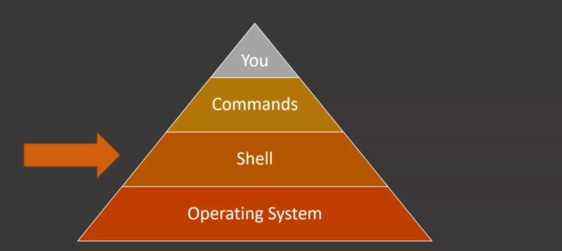

Shell is a program which interpretes our commands and sends them to Operating System.

Shell is needed as it makes issuing commands easier.
BASH short of Bourne Again Shell is a shell. It is updated version of Bourne Shell(sh). It is non arguably the most used shell in linux world. There are other shells too but bash is more feature rich, fast and is available in almost every linux distro.
Scripts are basically shell commands written in a file which will be executed by shell when that file is executed. So why scripts? Simply to autmatee things.
Imagine you have to do a task daily, it taskes 200 lines. So, you have to enter those 200 lines manually each time you use them which is definetely how things should work . So we write scripts to automate these things.